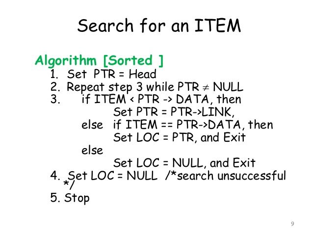

TRAVERSING AND SEARCHING
IN LINKED LIST
Presenteator: Hussain Ali
Student of (IT-II)
Roll Num: IT-E20-009
Traversing a Linked List
- It is a process of going through all the nodes of a
linked list from one
end to the other end.
- It we start traversing from the very first node
towards the last node, it
is called forward traversing.
- It we start traversing from the very last node
towards the first node,
it is called reverse traversing.
Linked List Introduction
- A linked list is a linear collection of data elements, called node pointing to the next nodes by means of pointers."
- Each node is divided into two parts
- The first part contains the information of the element.
- The second part called the link field contains the address of the next node in the list.
Memory Representation of Linked list

Algorithm to traversve a Linked List


Searching in Linked List
- The process of finding a particular node of a linked list is Called Searching.
- So There is Only one Search Technique which will see in Linked list. Mtlb we can only Apply linear search on linked list we can't apply binay
search on linked list
- two Algorithms for searching
- Sorted linked list searching
- Unsorted linked list searching
